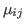

... であてはめ値と残差のプロットを描ける
1
type="p"
はピアソン残差（
Subject
ごとに標準化した残差）を指定。
. . . . . . . . . . . . . . . . . . . . . . . . . . . . . .
...response）を描くことができる
2
layout = c(6, 2)
で，パネルが2行6列（逆ではない）に配置される。
. . . . . . . . . . . . . . . . . . . . . . . . . . . . . .
... と呼ぶ
3
分散関数が

を含んでいなければ，正確な（制約付き）最尤推定になる。
. . . . . . . . . . . . . . . . . . . . . . . . . . . . . .